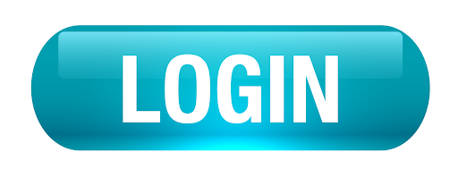
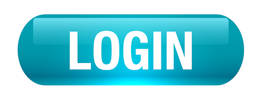

Número Europeu de Emergência: 112 | Intoxicações: 808 25 01 43
Saúde 24: 808 24 24 24 | Saúde Pública: 808 211 311
PSP Ovar: 256 580 890 | Abraço: 800 225 115
APAV - Associação Portuguesa de Apoio à Vítima: 707 200 077
Bombeiros Voluntários de Ovar: 256 572 122 | SOS Grávida: 808 20 11 39
Linha do Medicamento: 800 222 444 | Linha Cancro: 808 255 255
Intoxicações e Envenenamentos: 808 250 143 | Linha Vida/SOS Droga: 1414
Linha Medicamentos e Gravidez: 800 20 28 44 | Linha SIDA: 800 266 666
Abraço-Apoio a pessoas com SIDA: 800 225 115 | SOS criança: 800 202 651
Linha SOS SIDA: 800 20 10 40 | Linha do Cidadão Idoso: 800 203 531
Linha Segurança Social: 300 502 502 | Narcóticos Anónimos: 800 202 013
SOS suicídio: 800 202 669 | SOS deixar de fumar: 808 208 888
Sexualidade Segura: 800 202 120 | Sexualidade em Linha: 808 222 003
 
